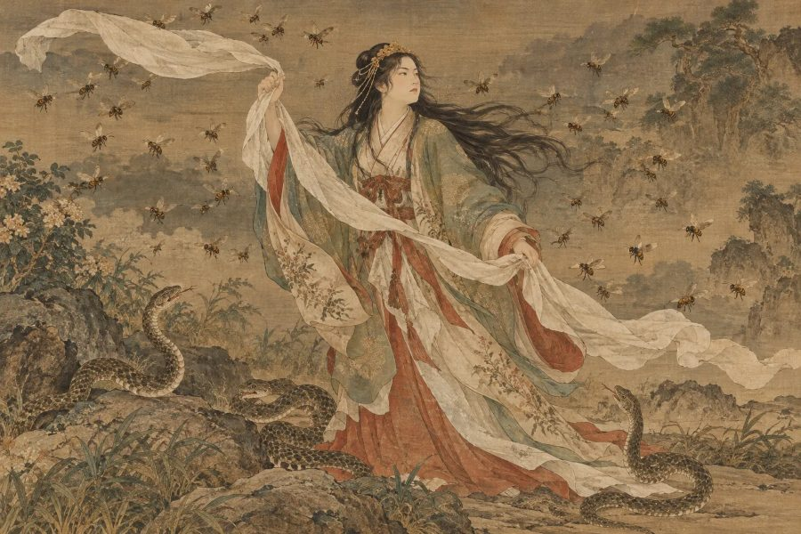

日本神話・神
スセリビメ
「試練に立ち向かう情熱の姫」
⛩️ あなたの正体も診断する（無料）本質
スサノオの娘。父が大国主に与えた蛇の部屋や蜂の部屋の試練を、ひそかに道具を渡して助け、駆け落ちのように結ばれた姫。激しいほどの愛情と行動力の持ち主です。
- ✨ 長所
- 愛する人のためなら、権威にも立ち向かえる勇気があります。決めたら迷わない行動力も魅力です。
- ⚠️ 短所
- 愛情が深いぶん、嫉妬心も強め。感情がそのまま態度に出てしまうことがあります。
- 💞 恋愛・人間関係
- 情熱的で一途。障害があるほど燃え上がる、ドラマチックな恋をします。
- 💼 仕事・才能
- 情熱を注げる仕事なら、誰よりも成果を出します。表現や接客の仕事にも向いています。
📍 ゆかりの地：出雲大社（島根県出雲市）